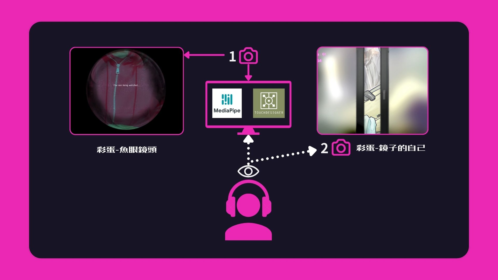
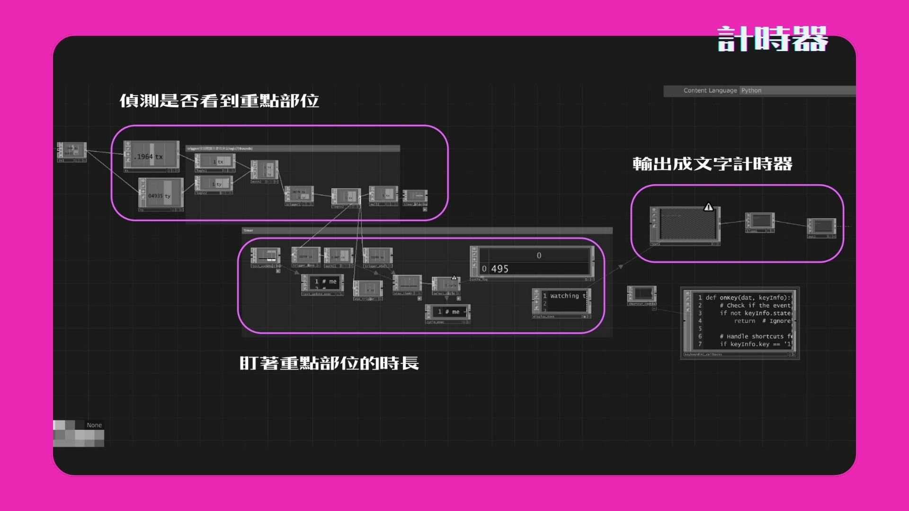

※此作品為成人取向!!另外我有改過名，主視覺海報的是舊名字!
使用媒材Tools
- TouchDesigner
- Mediapipe
- Webcam
負責項目Responsible
- 概念與企劃發想
- TouchDesigner互動邏輯
- UIUX流程與視覺
- Webcam串接
實際體驗影片
擬態偷窺背後的人性心理
簡介Introduction
當面對他人隱私，你會選擇壓抑窺探慾望，還是繼續探索?
以現代人對「隱私」和「慾望」的矛盾作為切入點，深入探討偷窺背後的心理。
感受慾望、道德與羞恥感之間的相互拉扯。
當你所見的越少，你想看到的越多。當你的眼界越小，你的慾望就越狂。
利用數位媒介將偷窺心理的過程具象化。透過視覺效果與互動設計，引導觀眾逐步揭開所隱藏內容，營造沉浸式偷窺體驗。
漸進式的偷窺體驗
由左至右，玩家窺見了辦公室的偷情、公共廁所的刺激裸露......
最後畫面一轉，看到了自己湊近在鏡頭前的身影，既窘迫又驚訝。
你以為只是你在偷看別人嗎? You are being watched.

